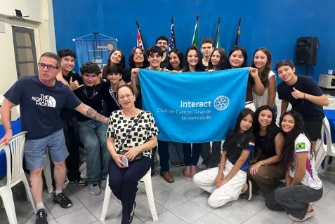
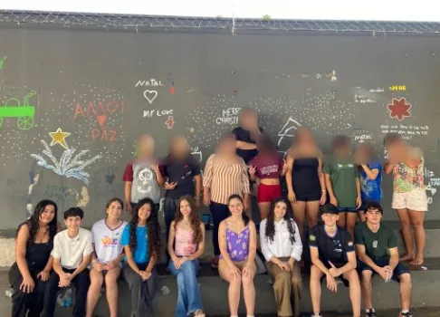
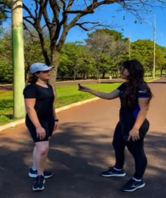
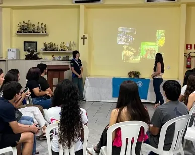
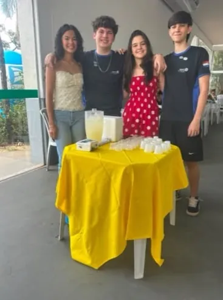
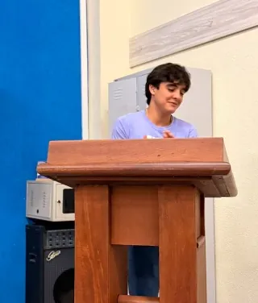
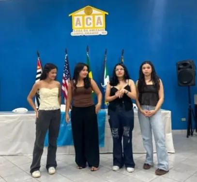
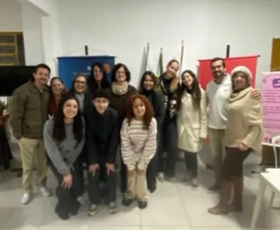

Jovens vivendo o voluntariado em Campo Grande
Jogar os Jogos do Interact
Quem somos
O Interact é o clube do Rotary para jovens de 12 a 18 anos. Aqui a gente organiza projetos para a comunidade, aprende a liderar fazendo e faz amigos pelo caminho.
O Interact Club de Campo Grande-Universidade faz parte do Distrito 4470. Na gestão 2026-27, o nosso lema é Crie impacto duradouro.
O que a gente faz
Ações na cidade, visitas, reuniões com os Rotary Clubs de Campo Grande e dinâmicas para aprender junto.







Jogos do Interact
Desafio novo toda meia-noite. Cada partida puxa o trem do seu distrito rumo à COMIC Nossas Raízes.
De graça, sem senha, abre direto do WhatsApp. Manda no grupo do seu clube.
Jogar agoraVenha conhecer uma reunião
Tem entre 12 e 18 anos e mora em Campo Grande? A gente se reúne todo sábado, às 16h.
Rua Eduardo Santos Pereira, 2328Campo Grande, MS
Mande uma mensagem antes de ir. Se a reunião mudar de lugar ou de horário, a gente consegue te avisar.